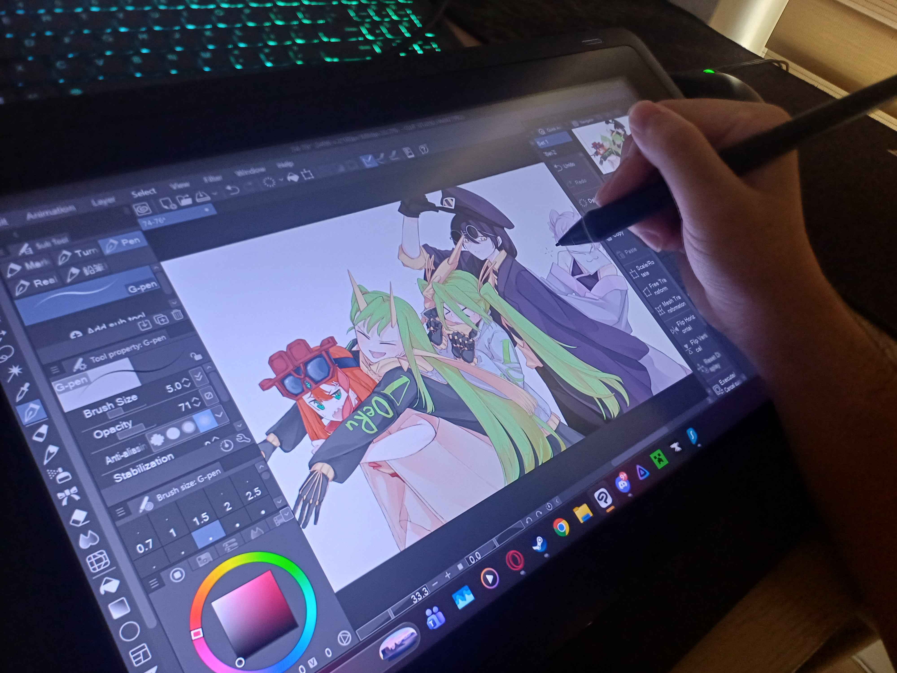
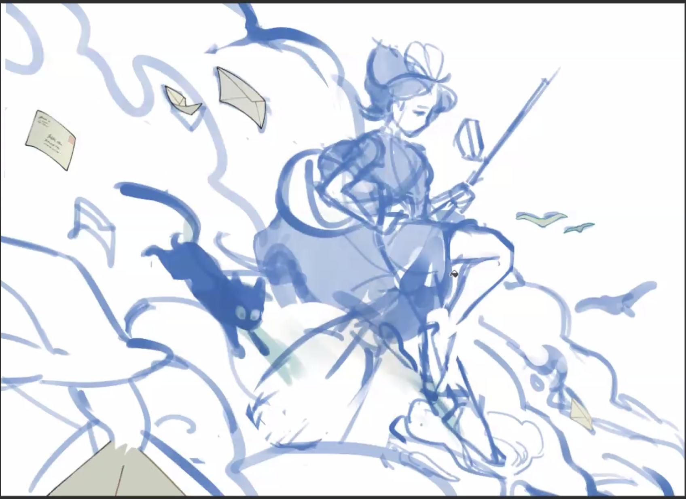

Design Case Study: Extending Instagram for Human Artists
Overview
Currently, floods of AI-generated slop on social media platforms like Instagram threaten hobbyists and aspiring artists. We wanted to design a feature to do something about this.
Nowadays, it's hard to tell whether an image online was drawn from hours of hard work with human hands, or within a few seconds via a prompt and a click. When there's no transparency online about what's created by AI versus humans, an image painstakingly drawn line-by-line is unjustly placed on the same playing field as one instantly spat out by a machine.
The issue is that AI-generated posts are often deceptive: they lack transparency about their generative-AI usage—which takes recognition, engagement, and potential business opportunities away from real human artists. In addition, AI's deceptive presence has caused much distrust towards online art as a whole, causing real artists to face scrutiny and accusations of creating inauthentic artwork.
So we designed a community-sourced feature for users to clearly identify AI-generated visual content to others.
Our design doesn't seek to remove/ban AI-generated content. Rather, it improves Instagram to be more transparent and respectful about generative-AI to better serve human artists and the platform as a whole. We specifically focused on Instagram for our case study because the issue is especially rampant there from our personal experiences and informal surveys of several online artists. Also—unlike X with its community notes and quote reposts—Instagram currently does not have any features that enable people to indicate to others that a post is AI-generated.
People have deceptively presented AI-generated art as human-made to garner thousands of engagements and even commission work that could have gone to a real artist. A PBS article describes prominent artists like Karla Ortiz and Sarah Anderson citing AI as a cause of lost work for artists. Additionally, just the creation of these AI models raises serious ethical concerns; they train on millions of human-made artworks without creator consent.
And, the prominence of deceptive AI-generated content has led to a rising sense of distrust against any artwork online, resulting in many false accusations against real artists. In one viral, extreme instance on X, an anime fanartist simply sharing her work for fun was falsely accused and bullied into disappearing online completely.
Additionally, current and upcoming artists are the foundation of social media's creative ecosystem, so supporting human creators is imperative for the platform. Artists have shown they'll switch platforms when the integrity of their work is disrespected. DeviantArt—a once-popular art-sharing website—saw mass account deletions after its lack of transparency regarding AI and its automatic opt-in of people's art into training models. Similarly, in 2024, an upcoming anti-AI app called Cara amassed over 600,000 users in a week after Meta announced all content (photos, art, even captions) could be used as training data.
A platform becoming flooded with unlabeled "slop" could also drastically lower people's impression of the company's brand overall. A 2025 survey by the Pew Research Center found that 76% of Americans think it's "extremely or very important" for pictures, videos, or text to be labeled as AI-generated or not, but 53% of Americans reported feeling "not too or not at all confident" in being able to tell the difference. In our user research, all our interviewees expressed a strong desire for AI-generated visual content on social media to be identified as such.
This is a complex issue; we recognize that no single feature or redesign can completely solve it. However, implementing at least some infrastructure on the platform that helps address it would signal that the platform values creator's consent and human-made work, maintaining trust and reputation among artists and general users alike.
User Research
We conducted user research to gain insight into personal experiences and perspectives on generative AI in the online art space. Our interviewees consisted of three hobbyist artists (people who share their art online for fun or as a side hustle but have no desire to pursue it professionally), one aspiring professional artist, and one non-artist who enjoys viewing artwork on social media. Notably, we made sure to interview at least one non-artist because the potential users of our extension are not just artists, but anyone who cares about the issue.
Despite coming from a variety of backgrounds, they all expressed a strongly negative stance against AI-generated "art." Their reasons varied, however, from its lack of creativity and/or quality, to the training models scraping real artwork without permission, to its threat to the careers of real human artists. An illustrator we interviewed painfully expressed that seeing AI have such a huge presence in the professional world "feels like salt in the wound" when it was trained on the work of the very artists they stole from.
Although all interviewees expressed frustration over AI art showing up on their feed, they also all described being somewhat desensitized to it. Nowadays, most simply just scroll past or block AI content accounts without thinking much about it. "I don't care about it anymore. Don't want to give it any engagement so I just wanna scroll past it," said one of our interviewees. Because they've seen it so often before but can't actively do anything about it, all they can do is avoid giving it further engagement.
When asked about what they wished social media platforms would do about the flood of AI-generated content, surprisingly all of the interviewees unanimously wanted that all AI content would be identified in some form. But this isn't easy. Auto-detectors are unreliable. False accusations on other platforms like X are at times rampant. As one of our interviewees had unfortunately experienced first-hand, people who publicly call out content as AI-generated may get harassed online for it. We had to carefully take all these considerations into our design.

Our interviews weren't just for user research purposes; we also got to know and understand our interviewees as artists and as people. We learned what each interviewee liked to draw and why they drew. We had the opportunity to see some of their personal workspaces and have them walk us through their creation processes. We witnessed how much time and effort they put into their work, with some pieces having taken over 19 hours. We heard how frustrated they were about the issue, with some of them even feeling really discouraged because of it. We got to see first-hand how important art is to their everyday lives, which reaffirmed the importance of the purpose behind our design project.
